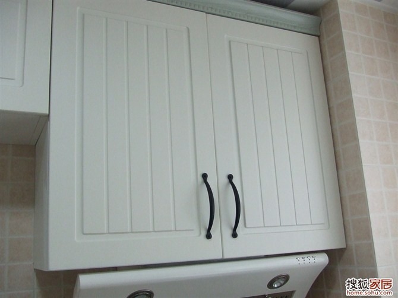
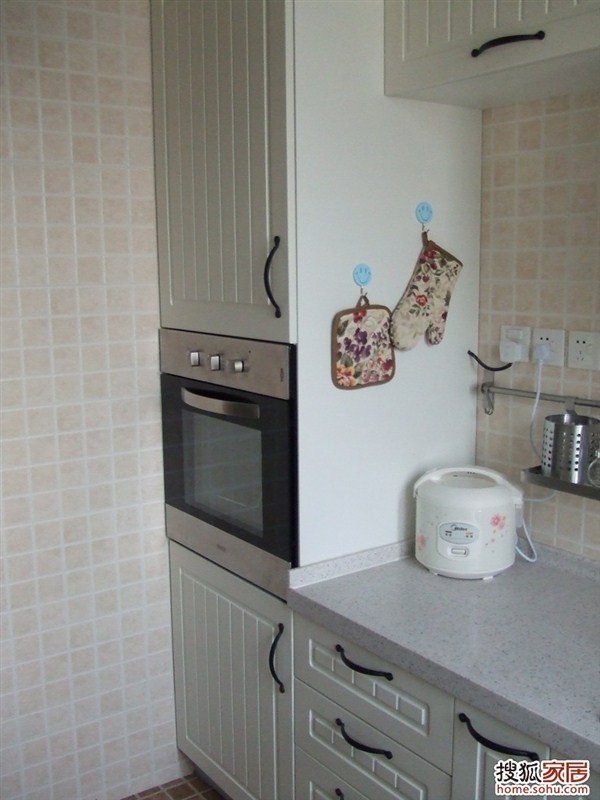
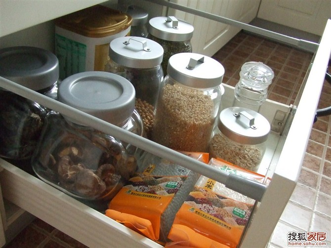
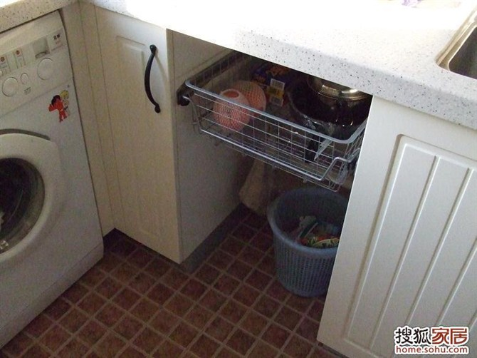
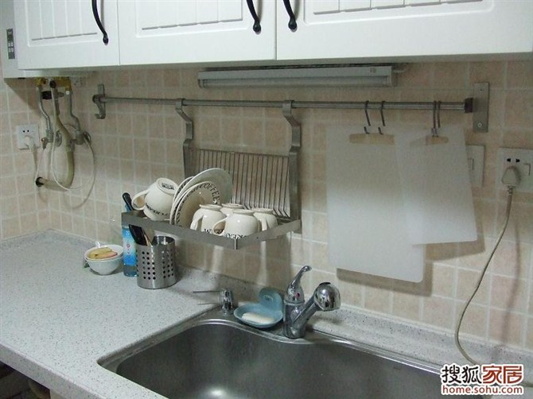
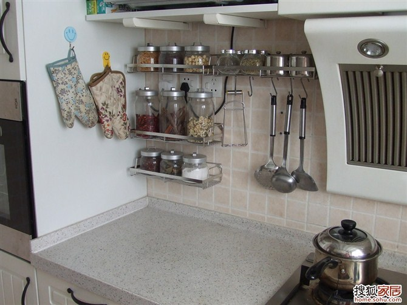

fitment
装修
- 实木地板脚感好，但是要保养
- 隐形门中看不中用
- 敞开式的书架或者储物架，要考虑积灰
- 灯不要朝上的，会积灰
- 安装漏电保护器和空气开关的分线盒，要放在室内，用好的
- 地板选择实木或者符合，会对应打地笼和找平的开销
- 走线时要想好空调位，将电源尽量移近空调，免得装空调时看到一截电源线，留下一丝遗憾。
- 亲自量度并记录房屋内可供使用的各个尺寸，可将楼书户型图上尺寸遮盖然后重新引线标注，最终的尺寸将直接影响装修设计和家具的购买。
- 对已经看好的家具最好把尺寸记下来，然后到房里虚拟将来的摆设情况
- 购买东西时必要的单据一定要保存好，此举对后期可能存在的退、换货情况绝对有益。特别是一些重要物品的购物小票、说明书等，因为好多东西是有保修期的，凭证丢了会比较麻烦。
- 买东西要考虑好门的大小，别搬不进去
- 别让漆掉到地板地砖上
地板 http://www.zhihu.com/question/20721677
Xu Meng的经验
1.如果卧室不打算吊顶，不要让水电工留电线在顶面，顶面也是可以开槽的。 2.卫生间预留柜前灯电线高度要注意，有些柜子高度不高的，让水电工尽量留低不留高，电工给我家偷懒，留了个两米高:( 3.做橱柜的时候注意问清上柜的高度，是否需要做到顶，如果不做到顶，注意贴砖。如果做到顶，要加多少钱？他默认报的价钱的高度一般都会比顶低个几公分，然后交了定金去量房就开始让你加钱 4.橱柜后面贴差砖，30块一个平方，可以省七八个平方的钱呢，可以试试买好砖的时候和卖家要一些差砖，会有送的。 5.窗台石门槛石提前去问好，你可以让装修公司先把铺设费用写为0，说可能让卖家安装。然后自己跟泥工结算。装修公司45块钱一米，泥工最多30.窗台门槛加起来也能便宜两百。 6.如果想做石膏线，自己找，10块钱一米包安装，装修公司也是市场找的，转手就是14块一米。不过这东西真是没什么用，一般都是水电工偷懒留了线无奈下做的。 7.装修方案上，没定下来的东西，先把单价写上，尺寸标上，数量填0.项目经理喜欢加项不喜欢减项，减项等着烦吧。特别是衣柜啊书柜啊什么的大项，减一个项目经理可是脸色尴尬噢。加的话，到时候跟木工商量，单价就可以商量啦，加点钱，就可以做到顶了。不过我建议衣柜买成品，好看，门和柜子配套，还未必比装修公司的贵。现在那种衣柜店都是来家里量了尺寸定做的，还可以做到顶，不像装修公司都是高度做到2.4的。就是材料会变成不是实木的，但是甲醛释放量是一样的E1级，稍微贵一点还有更环保的。我觉得环保就好，不一定要实木哦。实木指接板，味道也挺重的。 8.门套基础统统让填0，没有用，后面减又烦，还可能漏减了。 9.东西能自己买就自己买，地漏啊门啊，别让装修公司代买，代买肯定贵的。 10.如果有中央空调，问清楚，6平方的电线会不会单独加钱？ 11.设计师后面都会推荐你地砖上墙，方案时先问清楚地砖上墙加多少钱。 12.买成品门，有些地方门套厚度超过多少多少是要加钱的，要问清楚。门洞不标准最后也会加你钱，白色说不定又加你钱，下定金前都要问清楚。 13.做雨棚，到结算的时候居然说长度是包括两边弯进来边的，于是你以为两米的统统变成两米六，超级坏，前面问清楚算法。 14.多逛逛市场货比三家确实会便宜点，不过就是时间成本高一点，看自己怎么看了。逛市场还能发现团购信息。 15.我遇到的设计师收了钱就不怎么再更新图纸了。最好签正式合同前图纸让全画好。 16.设计师的预算里面，尺寸很多是不对的，很多墙面的尺寸大了不是一点点，有空的话，在最后算总帐的时候自己去量一下，把错误的尺寸差价全部要回来。 17.那些工人缺什么东西，都不会提前说，第二天要用了才说。所以每个工人进场的时候，仔细的问他们，有什么东西是需要业主提供的，先买好。要反复交代他们提早说。
厨房
- 烟道的阀门装回去之前，一定要擦干净，保证阀片能够开关自如并能开到最大，否则会影响油烟机的排烟效果。可以在装吊顶时留两条不装，等油烟机安装完并试用无误后再把吊顶装好
橱柜
- 要有足够的台面操作空间
- 不要单一，浅色的台面，太容易脏
- 备餐区略高，这样洗配不用弯腰
- 烹饪去略矮，这样炒菜不用架着胳膊
- 用大单盆，洗锅方便，不要双盆
- 用台下盆，清洗台面方便
- 要有个大高柜子，烤箱放中间，其他地方也很能纳物
- 前后挡水条都要有
- 要有一组抽屉，放些零碎的东西
- 一定要有开放的架子，调味料，蜂蜜，茶叶，放在外面要好很多
- 要有放葱姜蒜的地方
- 垃圾桶要藏起来，但是用着又要方便
- 沥水架不能少，最好不占用台面
- 照明问题要考虑好，备餐区和烹饪去要分开
- 插头要多留，多用带开关的，省得拔来拔去
- 小厨宝，垃圾处理器的开光不要留在橱柜里
- 插头尽量不要留在柜子里
- 拉篮200就够了，300太沉太累
- 调味品不要放在柜子里，放在离灶台近且开放的架子上
- 厨房不一定都是锅碗瓢盆，也可以适当装饰，有些情趣。
- 油烟机最好用侧吸的，效果好。
- 如果不是不烧饭的人家，厨房最好能装空调(中央空调就解决了)
- 烟道最好打出去，不然容易出现烟道的烟反流，别人家做饭你家也得开油烟 机。
- 房内各种插座的位置提前算好。
- 地板颜色要略浅，但是厨卫的瓷砖颜色略深些好，而且不要单色。
- 配台下盆龙头，龙头嘴要长些
- 龙头要用手背能开关的，不然会有油腻或者肥皂等等。
- 台面下面要有厚木板，这样才可以在这面剁肉什么的。
整体效果

橱柜角的处理

橱柜的面板是吸塑的 便宜+可造型 造型选弧线的，便于清洁

台面是人造石白桦林 麻点的禁脏，人造石可以做到无缝

水槽

大高柜子

抽屉



拉篮

沥水架


调味架

锅盖架

洗手间
- 梳妆台不要是玻璃的，容易脏，难打理。
- 五金件一分钱一分货，要买质量好的。
- 龙头装冷热水管。
- 毛巾架单杆的实用
- 可以考虑弄一个毛巾消毒柜，浴巾，毛巾，甚至内衣都可以消毒
- 拔出来洗头的龙头
- 地漏一定要验收检查好
- 装脸盆要考虑好和镜子以及牙刷架毛巾架的相对位置。
- 卫生间可钉点钉勾或者装衣勾用来挂点东西的
- 瓷砖勾缝不该用白水泥勾。没有一个月就变成黑缝，难看死了。结果自己买了勾缝剂自己勾，那个累
- 如果地漏原来生产商或者发展商已经装了那种防臭的“碗”，千万别取出来。
- 卫生间地面瓷片贴好后就试水，如果流水比较缓慢就立即返工
- 买镜子时考虑一下镜前灯的位置，如果暂时不想装镜前灯，镜子的大小要能遮住为镜前灯预留的线最好。
- 一定要盯着楼上做防水….不然楼上往下滴水，弄的吊柜，墙面一片狼藉
- 卫生间给你留的线路够不够多。以后要装灯，换气，取暖器，万一镜柜还有灯，还有抽水马桶边上有插头。线路越多越好。
客厅
- 电视背景墙一定多设几个插座，电视，DVD….一摆上，就会发现插座不够用
餐厅

- 餐厅最好装个小吊扇，各种用处，夏天吃饭凉的快，还可以吹凉面条等等。
- 喜欢吃火锅的，留个插座位置插电磁炉
- 餐桌旁有个小柜子很好
阳台
- 阳台的墙面最好用瓷砖，比涂料防水。
- 晾衣架可以多选择下，价格水份很大
主卧

- 床头一定要有开关，不然冬天。。。
次卧
tatami


- 床的下面可以装个启动架，一扳就弹起来露出储物箱那种
风水
现代人对家装风水的关注，相较古代虽然有所减少。但是到了面临一些事情时，也不免在心中留意，图个吉利也是大家的夙愿。特别是大家在家居家装中对这一块的重视就更不可忽视了。那么究竟在家居家装中有哪些有关“家装家居风水”的装修知识呢？下面就来为大家深层次的解读一下，不为别的，就图个吉利与喜庆！ 第一、装修风水注意事项之大门风水
一套房子的风水好坏很大程度上是取决于大门的方位与立向，因为它是全家人的总出入口，是全家人连接外部空间的主要通道，如人之咽喉，也是全家人趋吉避凶的第一道屏障。大门的风水直接影响全家人的仕途，学业、财运等等。随着社会的发展，人们的风水意识也越来越薄弱，特别是现在，现代家居的大门则是开发商按照实用功能设置固定的，一般都无法按照古法或自己意愿去改变它，显然只能以顺其自然的易道精神进行风水调配，在装饰设计时用风水的观点，化害为利达到趋吉避凶的目的。
风水主张入门宜三见：
1、一见开门见红，意思是一开大门即能见到红色的屏风、图腾或照壁，因为在中国，红色代表喜庆，所以它给人有一种喜气洋洋，温暧如春的感觉。
2、开门见绿，是指一进大门即能见到红花绿叶。科学已经证明，绿色的视野最大，也能令整个空间顿时充满生机，所以它能给人予一种生意盎然生机勃勃的感觉，瞬间舒缓情绪，解除压力的功效；
3、开门见“福”，意思是指一进家门即能见到雅致的“福”字，开门见福不是指特定的“福”字，一幅赏心悦目的白云、蓝天、小溪、流水的图画或工艺品也可以，因为它主要是起到体现房屋主人的文化品位和调节紧张劳累的心境的作用。还有就是入门忌五见，一忌开门见灶，以风水而言，开门见灶，叫火烧天门，《阳宅指要》说：“开门见灶，钱财多耗”，火气炽热，令财气无法进入。二忌开门见厕，因为厕所是污秽之地，秽气迎人，则不利家人健康。道理很浅显，人要是居住在一个秽气冲天的环境里，肯定会提高瘰患疾病的机会。三忌开门见镜，因为镜子有集光、化煞、避邪功能，长期将自己的祥瑞之气反射出去，则会引邪上身，不利仕途、财运、学业等。四忌横梁压门，意思说一进家门即见横梁压着，则主家人无法出人头地，一生看人眼色，开门见横梁，无异会给人带来一种压抑的心情，人要是压抑，衰败之气常扰，轻则令人消极、不思进取，重则伤手脚，甚至会有自杀倾向。五忌入鬼门，意思是指将门做拱门，状若墓碑，类似阴宅，会给家人带来不幸，一个宅居的大门设计，联系着家人的运气好坏，所谓寒门、贵门，均在此显见。
第二、装修风水注意事项之过道楼梯风水(指复式或别墅风水)
过道、楼梯是家人走动的地方，也承载着全家人的气场。在风水学里面凡是动态的地方都和财运有重大的关连。
(1)过道的设计不宜过长。超过整套住宅2/3的长度会产生阴磁性，如果占的方位又不好，则会经常闹鬼，老人、小孩病多，主人财运不佳。
(2)走廊色调要求简洁明亮，上方不宜有横梁，这样会造成家人风湿或头痛疾病。
(3)走廊上方不宜悬挂吊灯、尖角、棱形的设计，更不宜使用五颜六色的灯光，这样会让家人造成情绪不安，严重者会造成心脏功能损害。
(4)过道不宜设计艺术性陷井，这样会造成家人心惊胆战，惶惶不可终日。
楼梯和大门互为表里，同样是动态气场，承接着居室空间的气场流通，不要设置在居室的中轴线上，尽量设置在当旺之方位，按宇宙的螺旋气场的运行规律相一致“即是顺时针方向”，不宜入门见梯，有退败之意，楼梯不宜对冲房门，严重者会患血光、手脚伤残之灾，设计不能布下陷井。
第三、装修风水注意事项之家居玄关
家居玄关是指进入大门后的第一个空间的第一道屏障。其重要性仅次于大门，因玄关具有美化视觉缓和内外气场，挡煞，聚气的作用。如人之喉舌，历来被风水术家所重视。在设置玄关时要注意不宜太狭窄，不宜设置反光镜片，不宜有横梁、七穿八孔的仿古架、舞刀弄剑的神像、尖角棱形、张牙舞爪的饰物，要线条明了、简洁。如需设立鞋柜，则不能太高，大至6-80公分为宜，在设立玄关动感时需悬挂饰物的，则需注意如下几点：
1、如玄关设在北方则不能用马的图案，因马属火居南方，北方属水形成风水的水火不相射，也叫水火不容，给家人招致灾难；玄关设在东北方，则不能用羊的图案，风水学上土牛会招来无妄之灾；玄关设在西南方则不宜用虎的图案和饰物，《风水大成》说：“虎猴交，兵刃血光见”；
2、玄关在西方不能用兔的图案，《风水大成》上说“成池重会洞房夜夜换新郎”；3、玄关在西北不能用龙的图案；《阳宅大成》里说“龙狗交，任汝蛟龙也跛脚”。总之玄关风水，喜回旋，忌直冲，这样，才能真正起到玄关化煞、聚气、迎祥集福的调候作用。另外，房屋太狭小的，不宜设立玄关，这样显得空间更加狭小，给人予压迫感。在选择吉祥物件饰品时忌与自己的生年太岁相冲，如鼠年生人忌马饰品，牛年生人忌羊饰品，虎年生民忌猴饰品，兔年生人忌鸡饰品，龙年生人忌狗饰品，蛇年生人忌猪饰品，马年生人忌鼠饰品，羊年生人忌牛饰品，猴年生人忌虎饰品，鸡年生人忌兔饰品，狗年生人忌龙饰品，猪年生人忌蛇饰品。
第四、装修风水注意事项之客厅风水
客厅是整套居室动与静的衔接点，是居家生活的活动中心，和迎宾待客的场所，也是整套居室的核心之地，最能体现主人的精神面貌和运气，古人曾说：厅雅何须大，花香不在多。因其功能空间大，使用频率高，装修设计风水中历来被风水和装饰设计师们所重视。
客厅是家居的中心地，位置应设在房前，而不宜在房后，相对于其它功能区，客厅的采光一定要好。风水要求，光厅暗房，避免走廊横或直向贯穿客厅中央，既要顾及客人来访，也要顾及家人生活的隐秘性，力求做到环视八方，又不易被人察觉。在颜色的选取上，要根据主人的四柱五行选取，大致主色可按坐向来搭配。风水术中东、南、西、北为四正室，东北、东南、西北、西南为四维室，认准方向就可为你的住宅调配颜色了。东向客厅宜用米黄色为主要色调，因东方五行属木，而土是木之财，黄色是土的代表色，故黄色能助主人发财。南向客厅以白色为主色调，南为离火，依生克理论金为火财，金的代表色为白色，所以白色能消减火之炽焰，也能给居家带来财运。西向的客厅以绿蓝为主色调，或加于淡蓝的色彩，或载种较为茂盛的树木，或采用木质家具，因木为金之才，而绿色则是木的代表色，西向住宅阳光较强植物载种能补这方面的缺点，亦能有助主人财运、官运和学业。北向客厅以淡红微红为主色调，北方五行属水，南方火则是水之财，而红色是火的代表色，北向客厅配以红色，能达到水火既济之功，大利主人财运及异性缘。
其它四维向的颜色配置是：
东南向客厅，宜用黄色，西南向客厅宜用蓝色，西北向客厅宜用绿色红色，东北向客厅宜用微红蓝色。
第五、装修风水注意事项之主人房风水
主人房风水的好坏，直接影响着主人的财运、事业、前途和家庭，据阳宅三要记载，门主灶的主卧相当重要，其仅次于大门，他的方位，采光、通风、颜色、饰物、照明、花卉显得相当讲究，因为一天中主人有1/3的时间在卧室中度过，包括夫妻之间的肌肤之亲，在偌的居家里，卧室也是唯一的独享之处，在一般情况下，东南、西北二方设主卧为宜，西北主动力，成熟、稳重、责任感、东南主名气，文化、向上，在这二方设置主卧易受领导器重，在工作中与生活方面容易得到他人的尊重，色调使用方面尽可能结合主夫妇的命造，以简洁、明快、温暧为宜，大致可用方位划分，东、东南方位宜用绿、蓝、黑色，南方位可用紫、黄、黑色，西方位可用微红、米黄、白色、北方位可用红、黄、米黄、西北可用灰、红、黄、东北可用淡黄、橙黄、棕色、西南宜用淡红、棕色。
床的摆放位置需注意如下几点：
1、床头不宜靠窗，让人有不踏实的感觉，严重影响睡眠质量。
2、床头上面不宜悬挂物件，包括夫妻照片，或工艺品，让人感觉有危机感，重者则易患偏头痛。
3、床头不宜靠厕所，冲凉房使人容易患妇科病。
4、床前不宜摆放梳装台镜，反光玻璃能散气，长期处照射之下，容易得惊吓或精神恍惚症，重者会造成心脏功能失常。
5、床不宜对门或摆在房门旁，住在这样的地方很难聚财，也难保证私秘性和应有的安全感。
6、床顶不宜悬挂吊灯和横、竖梁压顶，这些都容易给房主人带来不幸。
7、主卧室内忌放神佛像和刀、枪、剑等凶器，会给房主人带来凶险之灾。
六、装修风水注意事项之厨房风水：
厨房的风水在阳宅三要中指出，灶乃安命之源，百病皆由饮食而起，灶乃财之源，万财皆由灶生。由此可见灶的风水仅次于门，主卧，厨灶风水的好坏，直接影响着全家人的财运及健康，在地理正宗阐述灶应安在生气、延年、天医三吉方。因为灶主一家人的财帛、福禄及健康，所以在选择中尤为谨慎，具体操作还需结合女、男主人的命造来选择才能上吉，位置上的选择大致可选东或东南方位，因东方属木，东南方亦属木，木能耗水生火，特别适宜选择作为厨灶之用，南方属火，灶属火，火上加火为火炎土燥，易患食道及心脑血管疾病，在厨房风水设计中应知道的厨灶风水九大忌。一忌厨灶对门，二忌厨灶对厕，三忌厨厕同门；四忌地台高厅。五忌过道对火门。六忌灶门对水槽。七忌横梁下压。八忌灶后是窗。九忌水淋灶眼。十忌洞房厕所下方。民以食为天，食色性乃人之本能，所在在厨房选择时做到厨房设在北方，为水火既济，设在东北方为火土相生，生出主破耗，吉凶参半。厨房设在西北方为火烧天门，不利家长。设在西方为火盗金销，易患心肺之疾。设在西南方为泄出。对主母不利，厨房又是用水最多的地方，出水道主财帛，风水学里水是财，出水口的位置尽可能设在右下角，在色调配置上由主人自由喜欢，但忌用黑色厨房切忌完全封闭于屋中
厨房至少要有一面要对着空旷处(如阳台、天井、后院等)，切忌封闭，或在屋子中央。这种情形常见于事后自行加盖房舍，原本在屋后得厨房，在后头加盖之后，变成屋子中段，不但有碍卫生，更影响家运。
厨房不可设在卧室之间
厨房切不可设在两个卧室之间，犯此忌，对居住两边的卧室中的人不利。
忌在厨房内洗涤衣服
有些人会把洗衣机放在厨房，这是不好的，因为古人把厨房视为灶君之所在，十分神圣，在其间清洗不洁的衣物，影响运气
家中炉火向外使家道中落
厨房也不可盖在屋子前面，最忌炉火向外，否则家运中落。
朋友们，以上所讲的几点主要是按照《易经》五行学说以及在风水观点的各种装饰设计、饰品、方位，还有其它居室内的设置、形状等等。对人的心理、生理健康的影响，也是家居风学中最基础的理论，风水学博大精深，装修知识风水学界在短时间内也无法作出全面阐述。总的来说，居室内的风水设计，主要是怎样营造一个舒适、祥和的室内环境，让人回到家里即有一种让所有烦恼、压力涣然释放的感觉。所以说，风水是我国集环境学、美学、自然科学等等于一身的，自成一体学科。风水不容忽视！我国几千年留传下来的传统文化不容摒弃！
虽然家装风水学说，带有很多的神秘色彩！但从一些基本的环境、美学的角度来说还是有很多东西值得我们去深思。而不是仅仅将其作为一种迷信的理论，应当从辩证的角度来看待家装风水知识。我们都相信合理的布局，协调的环境对家人和自己都是极为有利的。